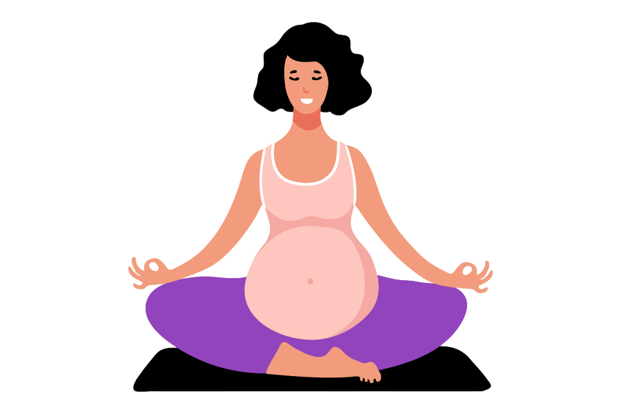
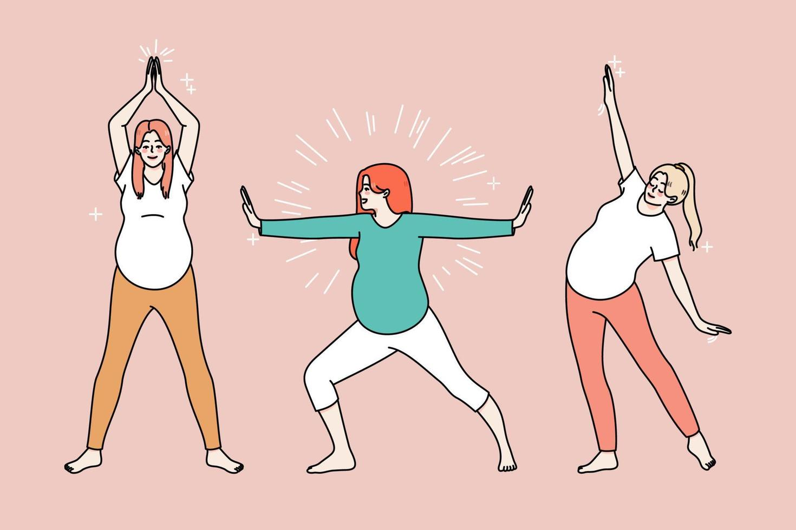

Здоровый образ жизни во время беременности
Питание
Главные правила для всех триместров:
- Пей чистую воду — 1,5–2 литра в день (если нет отёков и запрета врача).
- Ешь маленькими порциями 5–6 раз в день — так меньше изжоги и тошноты.
- Половина тарелки — овощи, четверть — белок, четверть — сложные углеводы.
- Сырые яйца, непрожаренное мясо, сырая рыба (суши), мягкие сыры с плесенью — под запретом!
- Кофе — не больше 1 маленькой чашки в день (или замени на цикорий).
Чек-лист «Что можно и нельзя» (общий для всей беременности)
| МОЖНО | НЕЛЬЗЯ |
|---|---|
| Овощи и фрукты (мытые) | Алкоголь полностью |
| Нежирное мясо (курица, индейка, говядина) | Сырое мясо, рыба, яйца |
| Рыба (не сырая, не копчёная) | Сырокопчёные колбасы |
| Кисломолочка (творог, кефир, йогурт без добавок) | Мягкие сыры с плесенью (бри, камамбер) |
| Каши (гречка, овсянка, рис, пшёнка) | Фастфуд, острые соусы, майонез |
| Супы на втором бульоне | Суши, роллы, строганина |
| Орехи, сухофрукты (горсть в день) | Энергетики |
| Хлеб цельнозерновой | Много сладкого и сдобы |
| Зелёный чай, травяные чаи (кроме шалфея и зверобоя) | Кофе больше 1 чашки в день |
Меню по триместрам
🛌 Завтрак: сухое печенье или крекер, не вставая с кровати. Через 20 минут — овсянка на воде с бананом.
🍏 Перекус: зелёное яблоко, горсть миндаля.
🍲 Обед: куриный бульон с сухариками, перетёртый овощной суп.
🥛 Полдник: йогурт натуральный + ложка мёда (если нет тошноты).
🐟 Ужин: картофельное пюре на воде с кусочком запечённой рыбы.
🍵 На ночь: ромашковый чай, пара ложек творога.
- Красное мясо (говядина, печень) — для железа
- Листовая зелень, брокколи, цветная капуста — для фолиевой кислоты
- Яйца всмятку или омлет
🍳 Завтрак: творог 5% со сметаной и ягодами, кусочек цельнозернового хлеба с сыром.
🌰 Перекус: горсть грецких орехов, банан.
🥩 Обед: гречка с тушёной говядиной, салат из огурцов и помидоров с растительным маслом.
🍎 Полдник: кефир, запечённое яблоко с корицей.
🍗 Ужин: запечённая куриная грудка с цветной капустой и брокколи.
🥛 На ночь: тёплое молоко + щепотка мускатного ореха (помогает уснуть).
- Кунжутная паста (урбеч) — рекорд по кальцию
- Кисломолочка каждый день (кефир, ряженка, йогурт)
- Красная рыба (форель, горбуша) 1–2 раза в неделю — полезные жиры
🌾 Завтрак: овсяная каша на воде с ягодами или сухофруктами, зелёный чай.
🍐 Перекус: груша или персик, горсть кешью.
🥣 Обед: суп-пюре из тыквы или кабачков, паровые котлеты из индейки с гречкой.
🍮 Полдник: творожная запеканка без сахара, компот из сухофруктов.
🍳 Ужин: омлет из 2 белков + один желток с помидорами, салат из листовых овощей.
🌿 На ночь: отвар шиповника или ромашка.
- Соль (соленья, копчёности, колбасы) — чтобы не было отёков
- Белый хлеб, сладкое — лишний вес и нагрузка
- Жирное мясо, жареное — изжога и тяжесть
Физическая активность (бережно и безопасно)
Главные правила:
- Зарядка и гимнастика ПОЛЕЗНЫ, но только если врач разрешил и нет противопоказаний.
- Нельзя начинать занятия по видео из интернета — неизвестно, подходит ли это лично тебе.
- Идеальный вариант: спросить у своего врача — можно ли именно тебе и какие упражнения.
- Сырые яйца, непрожаренное мясо, сырая рыба (суши), мягкие сыры с плесенью — под запретом!
- Остановиться при любых болях, головокружении, одышке, необычных ощущениях.
Где брать БЕЗОПАСНУЮ зарядку (со специалистами)
Важно: даже если ты ходишь в обычный спортзал, скажи тренеру о беременности. Большинство упражнений (пресс, прыжки, резкие движения) нужно ИСКЛЮЧИТЬ.
Когда физическая активность запрещена полностью (абсолютные противопоказания)
- Кровянистые выделения
- Угроза выкидыша или преждевременных родов
- Предлежание плаценты (низкое расположение)
- Повышенное давление (выше 140/90)
- Гестоз (поздний токсикоз)
- Сильные отёки
- Любые боли после нагрузки или во время неё
- Многоплодная беременность с рисками

Какие упражнения обычно разрешают (если нет противопоказаний)
Ничего не делай без консультации!
Что спросить у врача, чтобы получить разрешение на зарядку
- «Можно ли мне делать зарядку дома или нужен только ЛФК?»
- «Какие упражнения мне нельзя точно?» (обычно пресс, прыжки, бег)
- «Можно ли мне ходить пешком и сколько?»
- «Есть ли у меня противопоказания для групповых занятий?»

Памятка для тех, кто хочет заниматься
- Получи разрешение врача.
- Найди курсы / ЛФК / школу материнства по месту жительства (спроси в ЖК).
- Если занимаешься дома — делай только те упражнения, которые показал специалист.
- Не повторяй за видео из интернета, даже если автор говорит «для беременных».
- Слушай тело. Боль — сигнал остановиться.
Как найти курсы для беременных в вашем районе. Куда позвонить или прийти:
Безопасность: режим дня, быт, работа
Режим дня — почему это важно
- снизить усталость и отёки
- нормализовать давление и сон
- уменьшить риск гестоза и анемии
- сохранить силы для родов
Сон и отдых
Что делать, если не спится
Гигиена и быт
| Что делать | Как правильно ✅ | Чего нельзя ❌ |
|---|---|---|
| Душ | Ежедневно, тёплый (37–38°C). Ванна — негорячая, не дольше 10–15 минут | Горячая ванна, баня, сауна — могут вызвать выкидыш или преждевременные роды |
| Уход за грудью | Обмывать тёплой водой, носить хлопковое бельё без косточек | Не давить, не массировать сильно, не сцеживать молозиво (может стимулировать сокращения матки) |
| Уборка дома | Мыть полы шваброй, не наклоняясь. Пылесосить с прямой спиной | Наклоняться низко, поднимать ведро с водой, тяжёлые сумки |
| Мытьё посуды | Лучше сидя на стуле, или стоя с небольшой опорой | Долго стоять на одном месте (отёки ног) |
| Глажка | Сидя на стуле, гладильная доска на удобной высоте | Долго стоять или сильно наклоняться |
| Стирка | Порошок засыпать мерной ложкой (не вдыхать). Проветривать помещение | Ручная стирка с наклонами, тяжести |
Работа (если вы работаете)
- Перевод на лёгкий труд (по закону — справка от врача)
- Дополнительные перерывы каждые 1–2 часа на 10–15 минут
- Возможность работать сидя (если работа стоячая)
- Удалёнка (если позволяет должность)
- Снижение нормы выработки
- Ночные смены (с 22:00 до 6:00)
- Сверхурочные, выходные, командировки
- Работа с химикатами, радиацией, излучением (компьютер — не считается, если не более 3 часов в день)
- Работа стоя более 3 часов подряд
- Подъём тяжестей (даже 2–3 кг — уже риск)
Домашние дела: таблица «можно / нельзя»
| Дело | Можно (как) ✅ | Нельзя ❌ |
|---|---|---|
| Готовка | Сидя на высоком стуле, пользоваться вытяжкой | Долго стоять у плиты, вдыхать дым, жарить на сильном огне |
| Мытьё полов | Шваброй с длинной ручкой | Наклоняться, таскать ведро |
| Пылесос | С прямой спиной, не спеша | Резкие движения, наклоны |
| Вынос мусора | Если пакет лёгкий (не больше 2–3 кг) | Таскать тяжёлые вёдра, спускаться по скользкой лестнице |
| Покупка продуктов | Разделить на маленькие пакеты, взять тележку | Таскать сумки, особенно в гору и по лестнице |
| Работа в огороде | Сидя на скамеечке, короткими подходами (до 20 минут) | Наклоняться, таскать вёдра с землёй/водой, пользоваться химикатами |
| Ремонт | Только если не красишь, не клеишь обои (пары вредны) | Краска, клей, растворители, перенос тяжёлых материалов |
Красные флаги в быту и на работе — срочно к врачу
Если во время работы или домашних дел появилось:
- Кровянистые выделения — Прекратить всё, лечь, вызвать скорую
- Тянущая боль внизу живота или пояснице — Сесть или лечь, если не проходит — вызвать врача
- Головокружение, потемнение в глазах — Сесть, опустить голову вниз, попить воды, измерить давление
- Отёк лица или рук (не снимается кольцо) — Обратиться к врачу в тот же день
- Сильная головная боль + мушки перед глазами — Срочно к врачу или скорая
- Схваткообразные боли до 37 недель — Лечь, вызвать скорую
Примерный распорядок дня (для беременной)
Короткие лайфхаки для быта
| Проблема | Решение |
|---|---|
| Трудно наклоняться | Взять «хвататель» (телескопическую ручку) за 200–300 руб. |
| Боль в спине от сидения | Подушка под поясницу, ноги на подставку, вставать каждый час |
| Тяжело готовить | Высокий стул на кухню, нарезать продукты сидя |
| Мешает живот при уборке | Швабра с длинной ручкой, глажка сидя, пылесосить маленькими отрезками |
| Трудно спать | Подушка для беременных (или валик под живот и между коленями) |